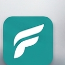

Кабинет 0
Техзам / координатор
Держит офис, синхронизацию кабинетов, порядок документации и переводит решения CEO в рабочие задачи.

Кабинет 0
Держит офис, синхронизацию кабинетов, порядок документации и переводит решения CEO в рабочие задачи.
Кабинет 1
Отвечает за финансовое дерево, формулы, термины, cash/card, подотчеты, остатки и финальный отчет.
Кабинет 2
Отвечает за PHP/API, базу, состояния отчетов, экспорт, перенос остатков и сохранность истории.
Кабинет 3
Отвечает за меню, mobile/tablet/desktop, компактность, карточки, таблицы, читаемость и визуальную дисциплину.
Кабинет 4
Отвечает за smoke, сценарии денег, роли, desktop/tablet/mobile, экспорт, регрессии и доказательства готовности.
Кабинет 5
Сверяет всех, держит риски, противоречия и право блокировать выпуск, если финансовая картина не доказана.